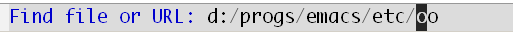
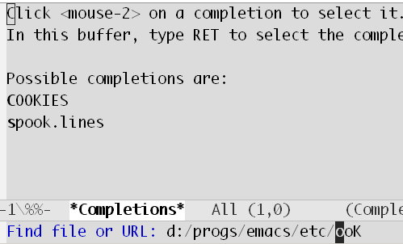

RSS feed
RSS feedAha! Emacs 23!

Some days ago I migrated to the emacs 23 pretest (23.0.92 Windows binaries and 23.0.91 Cocoa Mac binaries). In this post I’ll give brief notes of several of the cool features I found in emacs 23.
First, the good news: My zillions of customizations, installed packages and hooks all worked without a glitch and my most frequently used modes have been working great — c++, emacs-lisp, haskell (with ghci interaction), dired, eshell and the dear old text. Also there have been no crashes or freezes or (I shudder!) data corruptions. The pretest looks rock-solid. The only major thing that didn’t work for me was w3m (it asked me to try the development version; that might likely have worked).
So, what’s new?
The C-n and C-p line-motion commands now move by screen lines
Now next-line/previous-line go to the next/previous visual line as opposed to the logical line. In the words of StackOverflow poster Chris R, emacs navigation now acts like notepad.
While it’s just a change of defaults and one could revert to the earlier behavior by setting line-move-visual to nil, I still think, this is, by far, the biggest change in behavior of emacs 23. And I can safely bet that it would break many keyboard macros. In less than a week of use, this behavior bit me twice while calling some keyboard macros. Note that our friends C-a and C-e (move-beginning-of-line and move-end-of-line) still act on logical lines.
With this new default, the usual technique of jumping to the next/previous visual line (of a long logical line) via a quick isearch is no longer needed. But more keystrokes have to be pressed to go next/previous logical line.
There seems to have been a fair bit of discussion around the behavior of C-n and C-p.
Emacs can start as a daemon (the multi-tty feature)
With the --daemon command-line argument, emacs starts running in background (with no visible terminal session or frame). New terminal sessions or frames can be created using emacsclient: specify -c to create frames or -t for terminal sessions; and optionally -n if you don’t wish emacsclient to wait for the editing to finish. And if you’re feeling all hackerish, there’s even a -e option to supply an expression to be eval’ed!
emacsclient also worked way back with emacs 21, but only after a server-start had been done from a running emacs session. Then emacsclient would just create a new buffer in that existing session/frame.
With the new daemon support, distinct sessions/frames can be created, all connected with the same server. One thing I find cool with this setup is that different sessions opened simultaneously share buffers and other state. So if you make some changes (add text, delete paragraphs whatever) in a buffer in one session, you can see those changes get reflected in the view of that buffer in another session in real time. Finally, even if all sessions are closed, the buffers remain open.
{kind=link}
Two sessions (terminal and frame) working on the same buffer.
In emacs 21, emacsclient was already instantaneous because it didn’t have to load up a new copy of emacs and do all the startup initialization. Hence it could be safely set as the $EDITOR on Mac or Linux (See Jared’s post What is your $EDITOR?). The same is true with emacs 23 running in --daemon mode, and now we have the added flexibility to create new sessions/frames.
--daemon worked great for me on the Mac but on Windows, emacs refused to launch in the daemon mode, giving the error “This platform does not support the -daemon flag.” I wonder if daemon support for Windows would be included in the final emacs 23.
Emacs sessions created via emacsclient have a special indicator @ in the mode-line and the minor-mode indicator Server. C-x C-c is now mapped to save-buffers-kill-terminal rather than save-buffers-kill-emacs.
See djcb‘s entries at emacs-fu (a good regular source of emacs tricks) on emacs –daemon and windows and daemons.
Directory-local Variables
Directory-local variables are a great way to associate certain mode-specific variables to every file contained in a particular directory (or in its subdirectories).
As an example, say, you’re working on a C++ project that has peculiar code indentation requirements (indents are to be real tab character worth 8-space) while your usual indentation style is quite different (always 2-space indents, never tabs). Using directory-local variables, you can emacs pick the project’s indent style for files in the project’s directory and otherwise use your regular style. Something like the following setup would do the trick.
First, as usual, in your .emacs define your own personal style, via, say:
(setq-default c-basic-offset 2)(setq-default indent-tabs-mode nil)Next, define variables like c-basic-offset, tab-width, indent-tabs-mode to match your project’s style and associate them to the root of your source repository. So if your projects root is at “d:/work/BeautifulCode/”, you do this in your .emacs:
(dir-locals-set-class-variables 'beautiful-code '((c++-mode . ((c-basic-offset . 8) (tab-width . 8) (indent-tabs-mode . t)))))
(dir-locals-set-directory-class "d:/work/BeautifulCode/" 'beautiful-code)Now, whenever you open any C++ file under your project’s root, the project-specific formatting would get applied. You can work this way with many different projects, each having different formatting requirements, without having to write specific customizations via a magic first line at the top of each file like:
/* -*- c-basic-offset: 8; tab-width: 8; indent-tabs-mode: t; -*- */
Using directory-local variables, one could also define scm parameters (server/port, repository root, …) on a per root-directory basis. I think it’s a very powerful feature.
Similar to the above configuration via dir-locals-set-directory-class and dir-locals-set-class-variables, it is possible to define directory-local variables via a .dir-locals.el file (actually, the file defined by the dir-locals-file variable).
The idea is to place all project-related customizations in a .dir-locals.el file placed at the root of the project source tree. Then, when emacs opens any file under it, it applies these customizations. This way, uniform configurations can be shared across multiple developers using emacs.
Also see atomized’s post on directory local variables where he brings up some problems he’s faced with the directory-local variables feature.
Emacs can have transparent frames
The transparency of the emacs frame can be now controlled via the alpha frame parameter. Try something like: (set-frame-parameter (selected-frame) 'alpha 70)
{kind=link}
A Transparent emacs frame
This is undoubtedly cool (I bet XCode and Visual Studio can’t do that!) and maybe useful in one-off cases. But I don’t think anyone would have long emacs sessions with a transparent frame — it hinders visibility and is distracting.
D-Bus and ZeroConf
D-Bus is a Unix IPC system for applications to talk to each other. I’ve not had a chance to play with it, but for an example of using dbus in emacs, see djcb‘s using D-Bus example.
Anti-aliased font on X11
This will be a welcome enhancement for linux programmers. Being a Mac/Win user, I’ve enjoyed anti-aliased fonts for some time now. For details and screenshots on Linux, see XftGnuEmacs on EmacsWiki. Alexandre Vassalotti has a Pretty Emacs Reloaded package for Ubuntu. Another page describing how to set this up on Linux.
By the way, with anti-aliasing, I love the Bitstream Vera Sans Mono and Monaco fonts for programming (in particular because they have nice distinct shapes for l/1).
Recycle Bin/Trash can be used for file deletion
If delete-by-moving-to-trash is non-nil, then deleted files are moved to the Recycle Bin/Trash. It’s surprising that this feature wasn’t already available.
Search Enhancements
Some neat search and highlight related enhancements I found:
- M-s a C-s and M-s a M-C-s in dired runs multi-file isearch on the marked files. Should come in handy.
- For incremental word search, there’s a new command isearch-forward-word globally bound to M-s w. While doing an isearch, the same key M-s w (now bound to another new command isearch-toggle-word) toggles word searching on/off.
- M-s h r (bound globally to the command highlight-regexp) can be used to highlight all occurances of a regexp in a buffer. The same key can be used when doing isearch to highlight all occurrances of the current search string (it calls isearch-highlight-regexp internally).
- occur can now be invoked using M-s o. The same key runs an isearch-occur when doing an isearch.
- If an isearch is started in the minibuffer, it searches in the minibuffer!
- You can now specify group numbers explicitly in the regexp via an extended form of “shy” groups: \(?number:regexp\). Again a handy thing.
Some New Default Keybindings
- C-x C-+ or C-x C-= increase the text face size (font size), while C-x C-- decreases it (that is, zooming in/out). C-x C-0 restores to the default size. These are mapped to text-scale-adjust. You can also do stuff like C-x C-+ C-+ C-+, that is, omit the C-x on repeated commands.
- C-l now does something more useful. On the first invocation, it moves the current line to center of the window (as it did earlier). But on the second successive invocation, it moves the current line to the top of the window; and then to the bottom on a third invocation. Subsequent invocations cycle through these three placements. C-l is now bound to the recenter-top-bottom (in previous versions, it was bound to recenter).
New Modes
- linum-mode is a minor-mode for line numbers in the left margin. This is like vi’s :set nu command. I have already had the linum package installed for some years now, and had used it occasionally. It is nice to see it finally become a part of emacs.
- There’s a new game called bubbles (somewhat like “bejeweled”)
- proced is a “process editor” and creates a buffer with a list of processes running on the system (much like ibuffer does for buffers, or dired for files). You can use commands like k to kill a process etc. proced was not available on the Mac, while on Windows, it didn’t allow me to kill processes.
New Behaviors
- The shift-select-mode variable (t by default) enables Win/Mac style selection by pressing the shift key first, and then pressing the right/left arrow keys to grow/shrink selection.
- Pressing TAB when transient mark mode is now on (the default now) causes certain commands like M-q (fill-paragraph), M-$ (ispell-word) and TAB to operate on the region instead.
- Completion now takes text after the point in minibuffer into account for filtering the remaining alternatives (that were generated by the text before the point). For instance, if I’m trying to open the emacs PROBLEMS file, and the minibuffer input is d:/progs/emacs/etc/, and I type oo and bring the point back to before the oo, so that the input now looks like:
 If I then press TAB, emacs not only restricts the choices to the two files that have oo in them (COOKIES and spook.lines) but also updates the minibuffer input oo to ook (since both of these have a k following oo):
 - Minibuffer input for shell commands (M-!) also allows completion.
- M-x butterfly flips the desired bit on the disk platter. It is almost a cliché now — but somehow it’s still funny!
{kind=link}
{kind=link}
That’s about it! More pleasant surprises will turn up as I play more with it.
A word on the emacs etc/NEWS file. I would never have discovered some of the features mentioned above without digging through the NEWS file. It lists several other improvements and additions that I’ve not even had time to try! I couldn’t find a copy online, so here’s a link to a local copy of the emacs 23 NEWS file (build 23.0.92.1).
Thanks for the great review. I’ll be trying some of this today.
Thank you for taking the time to write such a thoughtful and entertaining review.
“But I don’t think anyone would have long emacs sessions with a transparent frame — it hinders visibility and is distracting”
I spend 8+ hours a day coding with a transparent background and have done so since long before emacs added this feature. I rely on the terminal emulator to do the transparency. I have my desktop background rotate every 30 min, giving me something fresh to look at at all times. Wouldnt say it’s in any way distracting, as long as you set the opacity correctly.
Although line-move-visual is a significant change, for me the biggest change is the new window splitting behavior, which is restored using (setq split-width-threshold most-positive-fixnum)
@David: Very interesting! I never know about this window splitting change. And with almost two years of use I never faced this. Not once. I guess you need a very wide window for that or emacs just knows my taste! Good hack though :-)
@Brad: Backgrounds or other “neutral” objects behind a text window (emacs or console) are probably okay. But if there’s another text-ful of window (like a browser or a terminal) behind a emacs session, it just looks very distracting. Anyway, I think it’s a matter of preference after all.
Wondering if u can help me with this….
Am trying to get C++ syntax high lighting work for emacs 23. Tried various things. Couldn’t make it work….
Any suggestions !!!
@Ashish: Try putting the following lines in your .emacs file (if you don’t have one, create one in you $HOME directory on Mac/Linux, or your %HOME% dir on Windows and define an environment variable so that HOME points to something like c:\home etc.)
(require ‘font-lock)
(global-font-lock-mode 1)
(setq font-lock-maximum-decoration t)
(setq font-lock-maximum-size nil)
Relaunch reader and see if that works. I don’t know if even that is required any more these days, but I have those settings and it works for me.
Really wonderful features, unknown to me.
One I like is about find-file: I can just type p.org and it will give me all files with p.*org with M-x find-file (rather than ido or something like that).